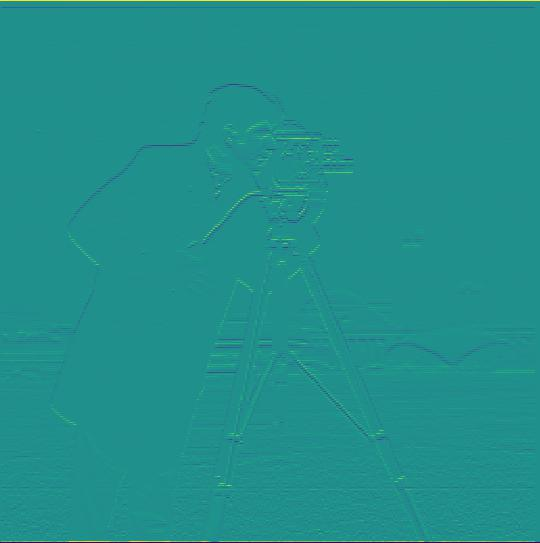
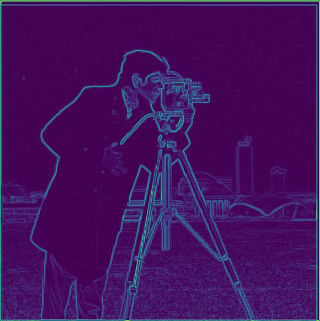
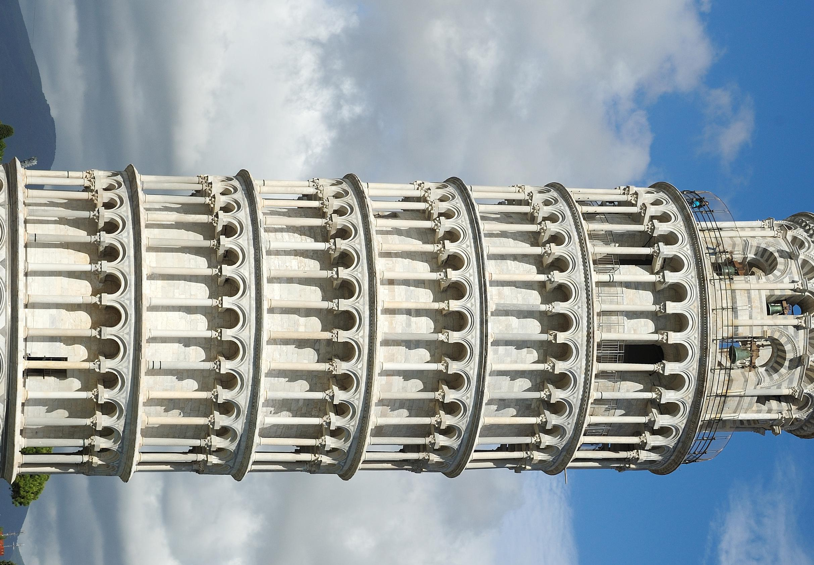
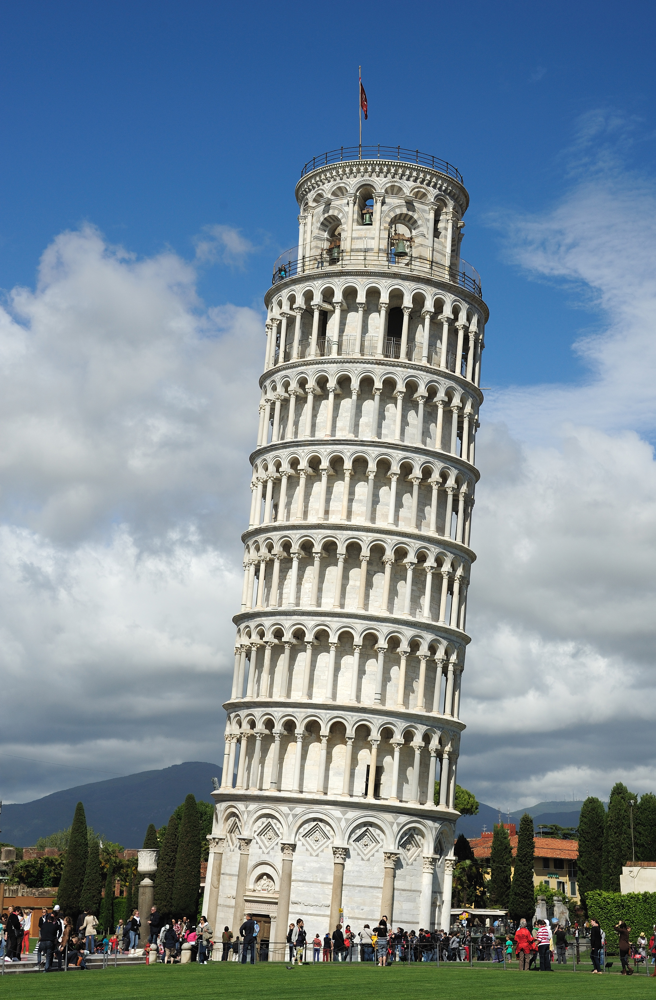
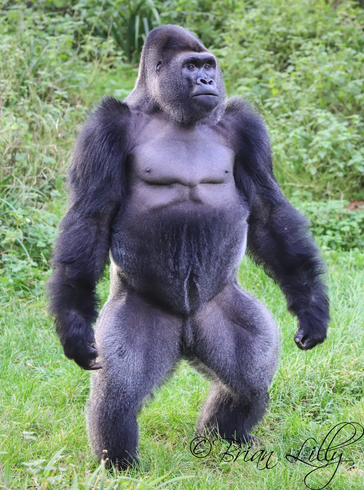
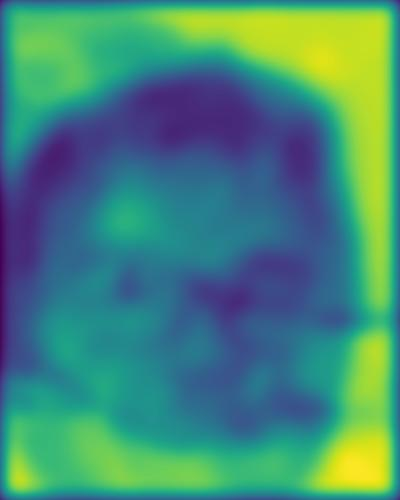

Partial Derivative
To compute the partial derivatives of an image, I took the vectors [[1, -1]] and [[1], [-1]] and convolved it with the image. To get the gradient, I squared the partials and summed them, then took the square root.
Gaussian Filter
To create a Gaussian Filter, I took a 1d gaussian kernel, and took the outer product with it's transpose.The derivative of the gaussian also showed the edges, but with less noise.Because of the commutativity of convolution, both methods give the same result.
Straightening
To straighten, I started by rotating the image by angles from -90 to 90, 10 degrees at a time. For each rotated image, I cropped the image, and applied a gaussian filter to the image. Then, I computed the gradient of this image, and used arctan to compute the angles. In order to count the significant angles only, I only took angles where the magnitude of the gradient was above a certain threshold. Then, I took the maximum number of angles near pi/2 or 0. Once I found the max angle, I did a local search from angle -5 degrees to angle + 5 degrees to optimize the straightening.
Sharpening
To sharpen images, I created an unsharp mask filter. This was made by first creating a unit impulse and subtracting a 2d gaussian filter from it.
Hybrid Images
To hybridize an image, I summed the low frequencies of 1 image and the high frequencies of another. Low frequencies were obtained by applying a gaussian filter, while high frequencies used the impulse minus the gaussian.
Gaussian and Laplacian Stacks
I made the gaussian stack first by repeatedly applying a 2d gaussian for each level of the stack. Then, for the laplacian stack, I took the difference of each neighboring level of the gaussian stack.
Image Splining
Once gaussian and laplacian stacks were implemented, I could implement image splining by summing the laplacian stacks of each image. For each layer, I weighted the contribution depending on the gaussian of a masking region that defined where the image should be splined.



Straightened image.


Similar to the issues in the above picture, but it also attempted to straighten a straight picture. It could not recognize that the leaning tower of pisa should, in fact, be leaning.
Original Picture Edge Histogram Sharpened Image



Original picture of a gorilla. Hybrid photo. This one was somewhat of a failure case since the different body shapes made alignment very difficult. The following is the gaussian stack of the picture of my friend and a rat.

The following is the laplacian stack of the picture of my friend and a rat.


Hybrid images could be further optimized by modifying parameters. Splining could also be made smoother by using a better mask as well as changing the gaussian kernel size for the mask.